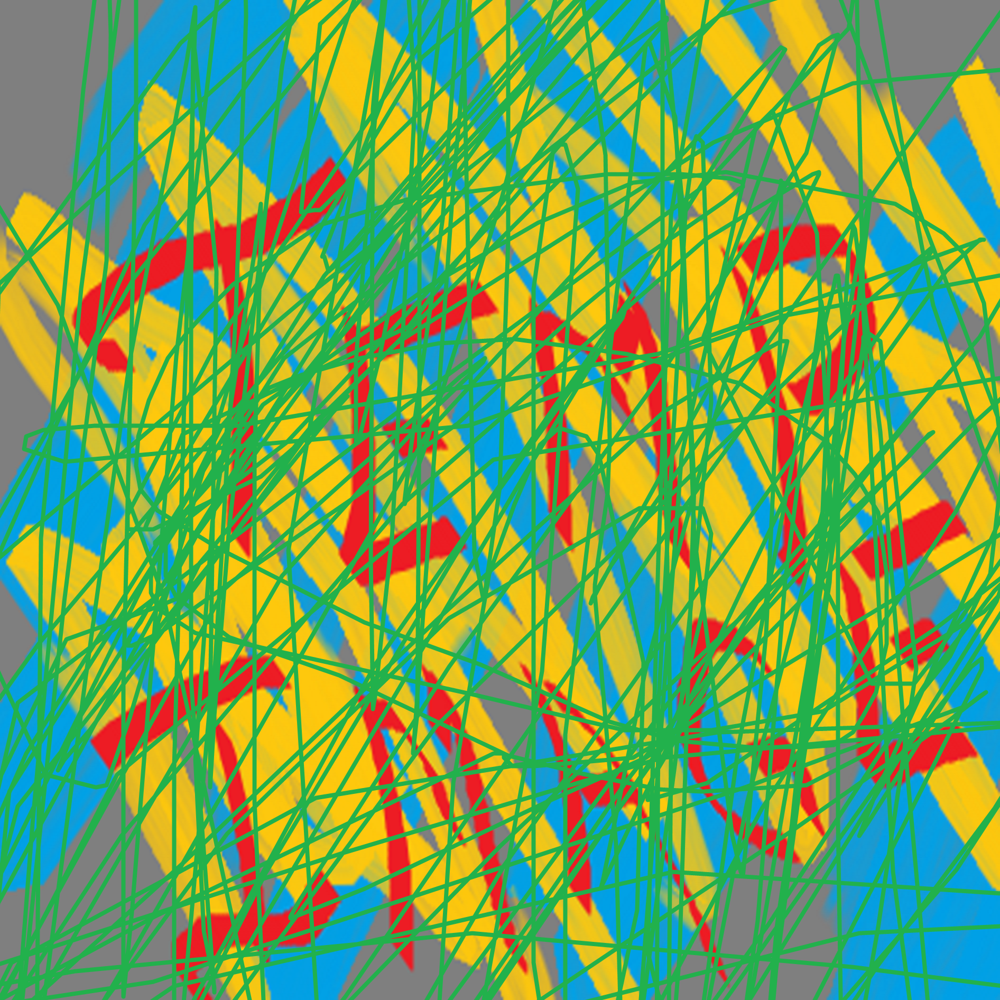
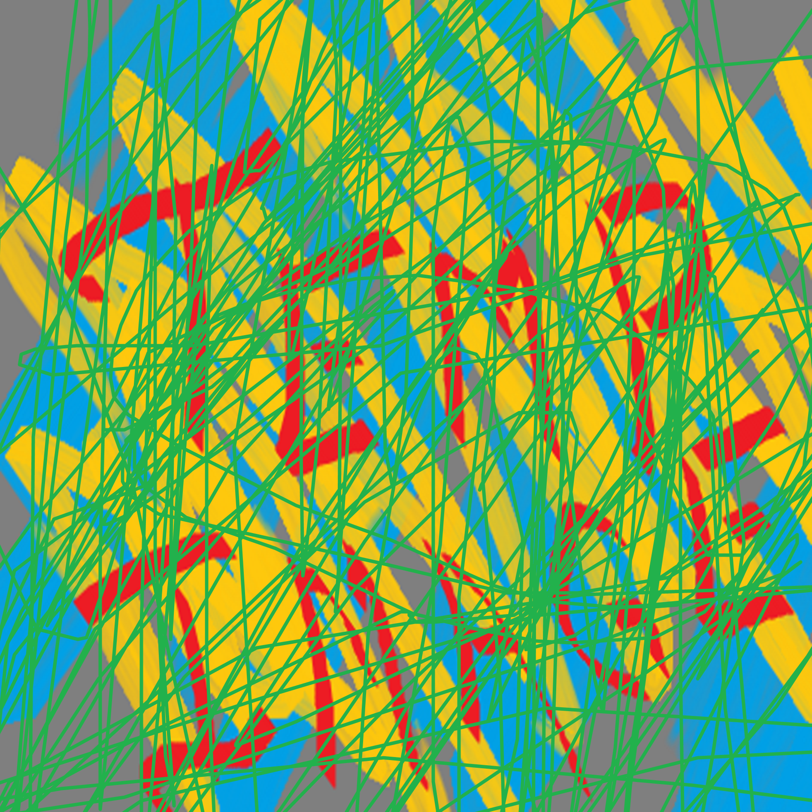

Completed Work
 

Clu Clu Land Port
Clu Clu Land is an arcade-style NES game, somewhat comparable to Pac-Man. Each level is
set up like a geoboard, with evenly spaced pegs sticking up out of the ground, some of which
are connected by rubber bands. On each stage, there is a hidden image made up of invisible
gold bars between the pegs. Your goal is to uncover the hidden image by moving your character
across each invisible gold bar.
It's not that easy though! Sea urchins and black holes will kill your character with the
slightest contact, and your life count is limited. Additionally, your character constantly
moves forwards automatically, and you can't directly change her direction. All you can do is
stick your character's left or right arm out to the side to make her swing around a peg as
she passes it, and use the momentum of her swing to change her direction.
It's a lot harder than it sounds!
This port I've made comes with a demo, remappable controls, new hidden images on each stage,
new items, and up to four-player simultaneous co-op play!
RetroAchievements* Site Scraping
It can be tedious checking your favorite websites every morning, especially if you need to
check for any updates across dozens of pages (Especially especially when those
updates may be as small as a single number being changed).
To run this program, just give it a list of user accounts from the RetroAchievements gaming
website that you want to track, as well as your email. Every time the program starts
tracking a new user (or game or game system), it scrapes the RetroAchievements website for
that user, then saves a JSON file with all of that user's relevant data (as well as a JSON
file for every game that user has saved in their history on the RetroAchievements website).
Then, every future time the program is run, it compares the data in its stored JSON file
with the data currently on the RetroAchievements website. It compiles all updates from
every file it's tracking and emails you a formatted list of all of these updates.
I found this very useful to make and use, since it allows me to know every time my friends
have played something new, or my favorite games have new challenges added to them.
* I have no affiliation with the RetroAchievements gaming website.
Basic Chess
A classic console-based chess engine with no frills. Players type their moves into the
console window.
The program recognizes when a player can and can't castle. It handles pawn promotion, check,
and checkmate automatically.
Work In-Progress
Four Player Mahjong
A program that allows the player to play a game of four-player mahjong. The program so far
can play a full game in a console window against three computer AI opponents, handles scoring,
features rudimentary computer AI, and can recognize winning hands or legal moves according to
the Hong Kong Old Style Mahjong ruleset.
In the future, I plan to give the program a graphical windowed mode, allow for the player to
select rulesets other than Hong Kong Old Style, separate out its scoring and AI system to
create mahjong calculator modes (e.g., showing the player how many points an arbitrary hand is
worth, or how many more turns at minimum a hand needs to win), and a more complex AI that takes
the scoring system into account.
Screenshot Stitcher Image Editor
A simple image editor that piece screenshots together, cropping and pasting the user's
current clipboard image. Designed to create maps of old screen-based video games such as
The Legend of Zelda or Metal Gear, this program excels at cropping out the
window borders of whatever gaming program is being run, and pasting each screen of the same
size a set apart from one another.
Some more work needs to be put in serializing/deserializing the image to save it, as well
as undoing/redoing an action or resizing the window to make this a truly responsive program.